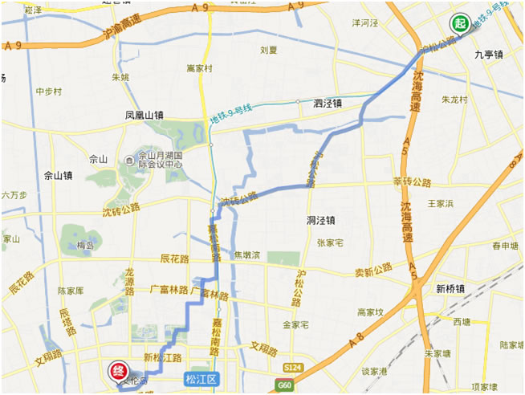
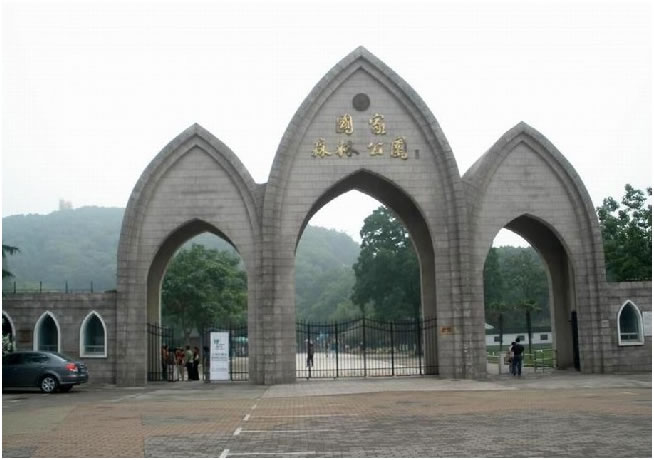
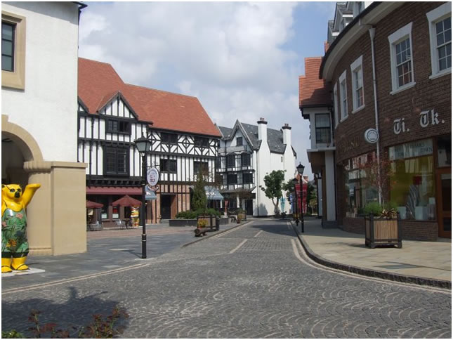
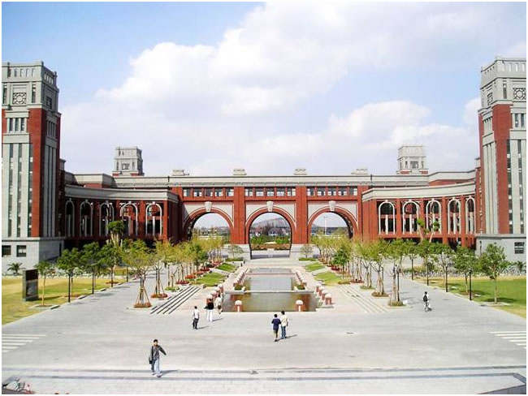

骑行俱乐部之佘山&泰晤士 召集
时间：5月16日一天
线路：九亭地铁站-> 佘山->辰山植物园->松江大学城-> 泰晤士小镇， 单程15km
景点：1. 佘山：上海最高峰，谁说上海没有山？佘山风景甲上海，绝对不错！
2. 辰山植物园：微风习习，青草依依，美景没得话说
3. 松江大学城：聒噪的大上海里的一丝恬静，久离校园的小伙伴们有机会重返象牙塔了。
4. 泰晤士小镇：英伦风格建筑群，典雅别致。小吃也很多，妹子们有福了。

俱乐部可以提供单车，头盔，手套，水，也会为大家购买保险，餐饮AA。
5月16号是阴天，没有大太阳，妹子们也不用担心被晒到。很适合骑行。
报名方式：回复本邮件，格式为：姓名-性别-身份证号-手机号。由于车店车辆有限，本次活动仅限25人，望谅解。
报名时间：截止到5月14日下午五点。
集合地点：九亭大街捷安特专卖店（九亭大街261号），大家坐地铁到那边集合。
集合时间：5月16日上午10点
联系方式：谢杨易：13701646157 路绪光（领队）：18964953545
注意：这个季节温度有点高了，穿轻便一点的衣服。